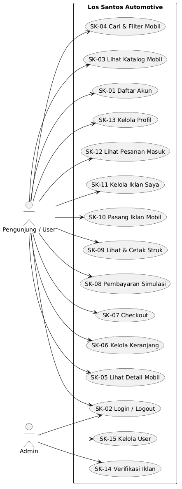
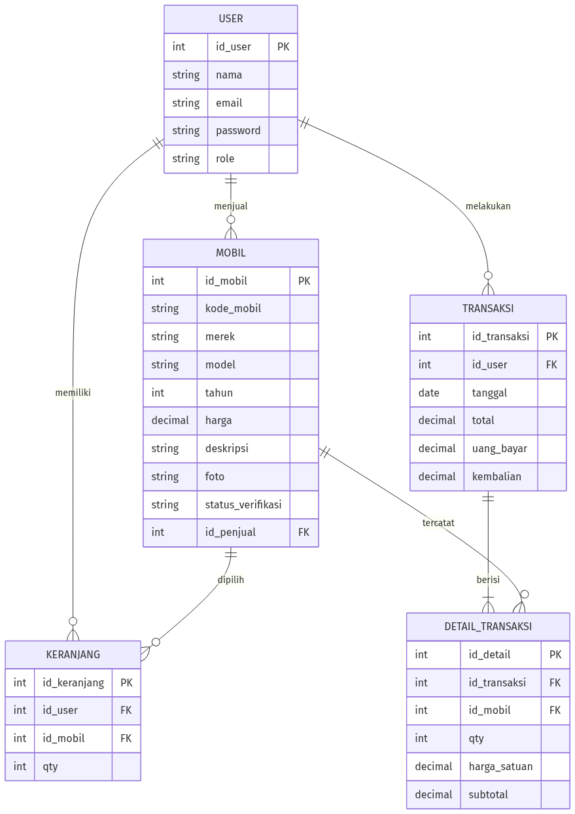

Spesifikasi Kebutuhan Perangkat Lunak Versi 1.0 (draft) · 26 September 2026
Mata Kuliah: Implementasi dan Pengujian Perangkat Lunak (CAK3BAB3) Kelompok 8: Fikri Ahmad Zidane (2211102336) · Ananda Tegar Pratama Saulaka (2211102356) TUBES: Los Santos Automotive — marketplace jual-beli mobil berbasis web
Dokumen ini mendefinisikan kebutuhan perangkat lunak untuk aplikasi Los Santos Automotive, yaitu aplikasi web marketplace jual-beli mobil. Dokumen ini menjadi acuan tim dalam tahap perancangan (DPPL), implementasi, dan pengujian perangkat lunak, serta menjadi dasar penilaian kesesuaian hasil implementasi terhadap kebutuhan.
| Istilah | Arti |
|---|---|
| SKPL | Spesifikasi Kebutuhan Perangkat Lunak (dokumen ini) |
| DPPL | Deskripsi Perancangan Perangkat Lunak |
| ERD | Entity Relationship Diagram |
| POS | Point of Sale (fitur transaksi: barang, jumlah, bayar, struk) |
| User | Pengguna terdaftar yang dapat membeli dan menjual mobil |
| Admin | Pengguna dengan hak akses pengelolaan iklan dan user |
| Struk | Bukti transaksi pembelian yang dapat dicetak/diunduh |
Los Santos Automotive adalah produk mandiri (stand-alone) berbasis web yang dikembangkan sebagai kelanjutan topik tugas besar dari mata kuliah sebelumnya. Aplikasi dibangun dengan arsitektur client-server: antarmuka web (browser) berkomunikasi dengan server aplikasi yang terhubung ke basis data PostgreSQL. Pengguna mengakses satu kesatuan sistem; pemisahan hak akses dilakukan melalui peran (role) pada akun.
| Kode | Fungsi | Deskripsi Singkat |
|---|---|---|
| SK-01 | Registrasi akun | Pengguna baru membuat akun (nama, email, password) |
| SK-02 | Login & logout | Autentikasi pengguna dan admin |
| SK-03 | Katalog mobil | Menampilkan daftar mobil yang telah terverifikasi |
| SK-04 | Pencarian & filter | Mencari mobil berdasarkan merek, rentang harga, dan tahun |
| SK-05 | Detail mobil | Menampilkan spesifikasi lengkap dan foto mobil |
| SK-06 | Keranjang | Menambah, melihat, dan menghapus mobil dari keranjang |
| SK-07 | Checkout | Menghitung total pembayaran dari isi keranjang |
| SK-08 | Pembayaran simulasi | Input uang bayar, menghitung kembalian |
| SK-09 | Struk | Menampilkan dan mencetak bukti transaksi |
| SK-10 | Pasang iklan mobil | Penjual mengunggah data mobil yang akan dijual |
| SK-11 | Kelola iklan | Penjual mengubah/menghapus iklan miliknya |
| SK-12 | Pesanan masuk | Penjual melihat daftar pesanan atas mobilnya |
| SK-13 | Kelola profil | Pengguna mengubah data profil |
| SK-14 | Verifikasi iklan | Admin menyetujui/menolak iklan yang masuk |
| SK-15 | Kelola user | Admin melihat dan menghapus user |
| Aktor | Karakteristik | Hak Akses Utama |
|---|---|---|
| User (pembeli/penjual) | Masyarakat umum, terbiasa menggunakan browser | Cari & beli mobil, pasang iklan, kelola profil |
| Admin | Operator sistem | Verifikasi iklan, kelola user |
| Kode | Nama Kebutuhan | Deskripsi | Aktor | Prioritas |
|---|---|---|---|---|
| SK-01 | Registrasi akun | Sistem menyediakan form pendaftaran; email harus unik; password disimpan dalam bentuk hash | User | Tinggi |
| SK-02 | Login & logout | Sistem memverifikasi email dan password, membuat sesi login, dan menyediakan logout | User, Admin | Tinggi |
| SK-03 | Katalog mobil | Sistem menampilkan daftar mobil berstatus terverifikasi beserta harga dan foto utama | User | Tinggi |
| SK-04 | Pencarian & filter | Sistem memfilter daftar mobil berdasarkan kata kunci merek/model, rentang harga, dan tahun | User | Tinggi |
| SK-05 | Detail mobil | Sistem menampilkan detail: kode mobil, merek, model, tahun, harga, deskripsi, dan foto | User | Tinggi |
| SK-06 | Keranjang | Sistem menyimpan mobil yang dipilih user; user dapat melihat, menambah jumlah, dan menghapus item | User | Tinggi |
| SK-07 | Checkout | Sistem menampilkan ringkasan keranjang dan menghitung total harga seluruh item | User | Tinggi |
| SK-08 | Pembayaran simulasi | User memasukkan jumlah uang bayar; sistem menghitung dan menampilkan kembalian | User | Tinggi |
| SK-09 | Struk | Sistem menampilkan struk transaksi dan menyediakan fitur cetak (print/PDF) | User | Tinggi |
| SK-10 | Pasang iklan | Penjual mengisi form iklan: kode mobil, merek, model, tahun, harga, deskripsi, dan foto; status awal "menunggu verifikasi" | User | Tinggi |
| SK-11 | Kelola iklan | Penjual dapat mengubah dan menghapus iklan miliknya | User | Sedang |
| SK-12 | Pesanan masuk | Penjual melihat daftar transaksi yang memuat mobilnya | User | Sedang |
| SK-13 | Kelola profil | User mengubah nama, email, dan password akunnya | User | Sedang |
| SK-14 | Verifikasi iklan | Admin melihat daftar iklan berstatus menunggu dan dapat menyetujui atau menolak | Admin | Tinggi |
| SK-15 | Kelola user | Admin melihat daftar user dan dapat menghapus user | Admin | Rendah |
| Kode | Kategori | Deskripsi |
|---|---|---|
| NFR-01 | Performa | Halaman utama tampil dalam waktu kurang dari 3 detik pada jaringan lokal |
| NFR-02 | Keamanan | Password disimpan ter-hash; halaman user/admin dilindungi sesi login; akses admin dipisahkan berdasarkan peran; input divalidasi di server |
| NFR-03 | Usability | Tampilan responsif (mobile-first) menggunakan Bootstrap; teks berbahasa Indonesia; navigasi maksimal 3 klik menuju transaksi |
| NFR-04 | Ketersediaan | Aplikasi berjalan stabil pada lingkungan Docker Compose (app + database) |
| NFR-05 | Maintainability | Struktur kode mengikuti pola MVC (routes, controllers, views); penamaan konsisten; komentar pada bagian penting |
| NFR-06 | Portabilitas | Dapat dijalankan di Linux/Windows selama Docker tersedia |
| Rute | Halaman | Akses |
|---|---|---|
| / | Beranda (katalog unggulan) | Publik |
| /mobil | Katalog mobil + pencarian & filter | Publik |
| /mobil/:id | Detail mobil | Publik |
| /register, /login | Registrasi dan login | Publik |
| /profile | Profil user | User |
| /keranjang | Keranjang | User |
| /checkout | Checkout & pembayaran | User |
| /struk/:id | Struk/invoice | User |
| /jual, /jual/kelola | Pasang iklan & kelola iklan | User |
| /pesanan | Pesanan masuk | User |
| /admin | Dashboard admin | Admin |
| /admin/iklan | Verifikasi iklan | Admin |
| /admin/user | Kelola user | Admin |
Diagram berikut menggambarkan seluruh interaksi antara aktor (User dan Admin) dengan fungsi-fungsi yang disediakan sistem Los Santos Automotive.
Daftar use case:
| Kode | Nama Use Case | Aktor |
|---|---|---|
| SK-01 | Daftar Akun | User |
| SK-02 | Login / Logout | User, Admin |
| SK-03 | Lihat Katalog Mobil | User |
| SK-04 | Cari & Filter Mobil | User |
| SK-05 | Lihat Detail Mobil | User |
| SK-06 | Kelola Keranjang | User |
| SK-07 | Checkout | User |
| SK-08 | Pembayaran Simulasi | User |
| SK-09 | Lihat & Cetak Struk | User |
| SK-10 | Pasang Iklan Mobil | User |
| SK-11 | Kelola Iklan Saya | User |
| SK-12 | Lihat Pesanan Masuk | User |
| SK-13 | Kelola Profil | User |
| SK-14 | Verifikasi Iklan | Admin |
| SK-15 | Kelola User | Admin |

Sumber diagram: img/use-case.puml
| Bagian | Keterangan |
|---|---|
| Nama use case | Checkout & Pembayaran |
| Aktor | User (pembeli) |
| Pra-kondisi | User sudah login dan keranjang berisi minimal satu mobil |
| Alur utama | 1. User membuka halaman keranjang; 2. User menekan tombol Checkout; 3. Sistem menampilkan ringkasan item dan total; 4. User memasukkan jumlah uang bayar; 5. Sistem menghitung kembalian; 6. User menekan tombol Bayar; 7. Sistem menyimpan transaksi dan menampilkan struk; 8. User mencetak/mengunduh struk |
| Alur alternatif | 4a. Uang bayar kurang dari total — sistem menolak dan menampilkan pesan; 1a. Keranjang kosong — tombol checkout dinonaktifkan |
| Pasca-kondisi | Transaksi tersimpan, isi keranjang dibersihkan, struk dapat dicetak |
| Bagian | Keterangan |
|---|---|
| Nama use case | Verifikasi Iklan |
| Aktor | Admin |
| Pra-kondisi | Admin sudah login; terdapat iklan berstatus "menunggu verifikasi" |
| Alur utama | 1. Admin membuka daftar iklan pending; 2. Admin memeriksa data iklan; 3. Admin menekan Setujui; 4. Sistem mengubah status iklan sehingga tampil di katalog |
| Alur alternatif | 3a. Admin menolak iklan — status menjadi "ditolak" dan tidak tampil di katalog |
| Pasca-kondisi | Status iklan diperbarui |
Diagram berikut menggambarkan struktur basis data beserta relasi antar tabel yang digunakan oleh aplikasi.

Sumber diagram: img/erd.mmd
| Entitas | Deskripsi | Atribut Utama |
|---|---|---|
| User | Akun pengguna (user & admin) | id_user, nama, email, password, role |
| Mobil | Data mobil yang diiklankan | id_mobil, kode_mobil, merek, model, tahun, harga, deskripsi, foto, status_verifikasi, id_penjual |
| Keranjang | Item mobil pilihan user sebelum checkout | id_keranjang, id_user, id_mobil, qty |
| Transaksi | Kepala transaksi pembelian | id_transaksi, id_user, tanggal, total, uang_bayar, kembalian |
| Detail_Transaksi | Rincian mobil per transaksi | id_detail, id_transaksi, id_mobil, qty, harga_satuan, subtotal |
Tabel: user
| Kolom | Tipe | Keterangan |
|---|---|---|
| id_user | SERIAL (PK) | ID unik pengguna (auto increment) |
| nama | VARCHAR(100) | Nama lengkap pengguna |
| VARCHAR(100), UNIQUE | Email untuk login — harus unik | |
| password | VARCHAR(255) | Password dalam bentuk hash (bcrypt) |
| role | VARCHAR(10) | Peran pengguna: "user" atau "admin" |
Tabel: mobil
| Kolom | Tipe | Keterangan |
|---|---|---|
| id_mobil | SERIAL (PK) | ID unik mobil |
| kode_mobil | VARCHAR(20), UNIQUE | Kode unik mobil — dipakai saat menambah ke keranjang |
| merek | VARCHAR(50) | Merek mobil (contoh: Toyota, Honda) |
| model | VARCHAR(50) | Model/tipe mobil |
| tahun | INT | Tahun produksi |
| harga | NUMERIC(12,2) | Harga jual (Rupiah) |
| deskripsi | TEXT | Deskripsi kondisi dan spesifikasi |
| foto | VARCHAR(255) | Nama file foto utama |
| status_verifikasi | VARCHAR(15) | "pending", "disetujui", atau "ditolak" |
| id_penjual | INT (FK → user.id_user) | Penjual yang memasang iklan |
Tabel: keranjang
| Kolom | Tipe | Keterangan |
|---|---|---|
| id_keranjang | SERIAL (PK) | ID unik baris keranjang |
| id_user | INT (FK → user.id_user) | Pemilik keranjang |
| id_mobil | INT (FK → mobil.id_mobil) | Mobil yang dipilih |
| qty | INT | Jumlah unit (umumnya 1) |
Tabel: transaksi
| Kolom | Tipe | Keterangan |
|---|---|---|
| id_transaksi | SERIAL (PK) | ID unik transaksi |
| id_user | INT (FK → user.id_user) | Pembeli |
| tanggal | TIMESTAMP | Waktu transaksi dibuat |
| total | NUMERIC(14,2) | Total nilai transaksi |
| uang_bayar | NUMERIC(14,2) | Jumlah uang yang dibayarkan pembeli |
| kembalian | NUMERIC(14,2) | uang_bayar − total |
Tabel: detail_transaksi
| Kolom | Tipe | Keterangan |
|---|---|---|
| id_detail | SERIAL (PK) | ID unik rincian |
| id_transaksi | INT (FK → transaksi.id_transaksi) | Transaksi induk |
| id_mobil | INT (FK → mobil.id_mobil) | Mobil yang dibeli |
| qty | INT | Jumlah unit |
| harga_satuan | NUMERIC(12,2) | Harga saat transaksi (snapshot) |
| subtotal | NUMERIC(14,2) | qty × harga_satuan |
Relasi antar tabel:
| Versi | Tanggal | Perubahan |
|---|---|---|
| 1.0 (draft) | 26 Sep 2026 | Draft awal: pendahuluan, deskripsi umum, kebutuhan fungsional & non-fungsional, antarmuka, model analisis |
Catatan draft: silakan koreksi bagian yang perlu (nama fitur, prioritas, skenario) sebelum diserahkan pada responsi.